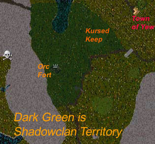

What: Shard-wide battle at a Keep
When Starts: First Sunday of the month, at 8pm CENTRAL time, the keep doors will
be unlocked, feel free to fight prior to this for the right to be the first
to enter the keep.
When Ends: 1 hour later, at 9pm CENTRAL time, the doors will
be locked
Prizes: Armor, weapons, supplies, 10-25k gold, and possession of the
Keep for a week.
How to win: Have the most # of players in your group (guild or combinations
of guilds) alive inside the keep
Read on for more info

What no orc could possibly fathom at the time was that the Stronghold was forever cursed, with a curse more powerful than any house sign or deed to a house. The Keep had been built upon the rotting corpses and graves of countless humans and orcs. As warriors of all races had fought and struggled for superiority on the blood-stained meadow, so too would the Stronghold struggle for a true owner. For once every month, the true owners of the Stronghold would be those who could take it and hold it.
Who would gain the right to live in the stronghold and the powers that came with it? Would the Shadowclan Orcs be able to maintain control? Or would humans gain a key foothold in orc territory, and if so, which humans?
For one week you can use the KEEP for whatever you want with only a couple minor restrictions (covered later).
During the battle, dragons, deamons, and other pets may be banned from the keep. You are free to use them outside all you want. (We will not ban horses, but we will ban nightmares and hero steeds).
You might be friended to the keep during the event if you are successful in entering it. This is so you won't be booted out of the keep if you lose connection. Do not abuse being friended by ejecting players or other advantages friends have. Doing so may result in your being banned from the keep and future events there.
All that matters is who has the most number of alive members properly identified inside the keep at the end of the event. How you got that control doesn't matter.
Guilds are encouraged to team up and dress in a unique color so that declaring a winner at the end of the evening is easier. The team with the most living/uniformed players inside the KEEP at the end will be the winners. (Deathrobe gray is not a uniform). Orcs and claim the right of no uniform. 2 teams with similar color uniforms is not the Orc's problem.
Please refrain from killing the keep co-owners that are doing the friending
and making sure the event goes smoothly. (Gorgdaguud)
Only those attending the battle will be friended. No one will be added later on.
The keys to the KEEP will be left in secure chests. The orcs guarantee that the only key kept by the orcs will be in the bank box of the KEEP's owner and won't be used by the orcs. Orcs will NOT keep any other keys. However orcs are free to kill you later and loot a key.
All human weapons and armor collected by the orcs prior to and during the battle will be left in the secure chests. Orc co-owners pledge not to use the secure chests during the week.
For one week, the winners will remain friended to the keep. They may use the keep in whatever way they wish, including parties (orcs love parties), battles (same), traing sessions (gah), staging wars against the orcs (grin), or any other use.
The only restriction is that the winners cannot ban other players from the keep. Orcs will clear the ban list often, and anyone caught specifically banning people will be removed from the friend's list. Banning pets is OK.
After one week the friend's list will be cleared, the keep made public, and an orc bar will be opened on the 2nd level.
If all goes well, another battle with the same conditions will be held on the first sunday of each month.